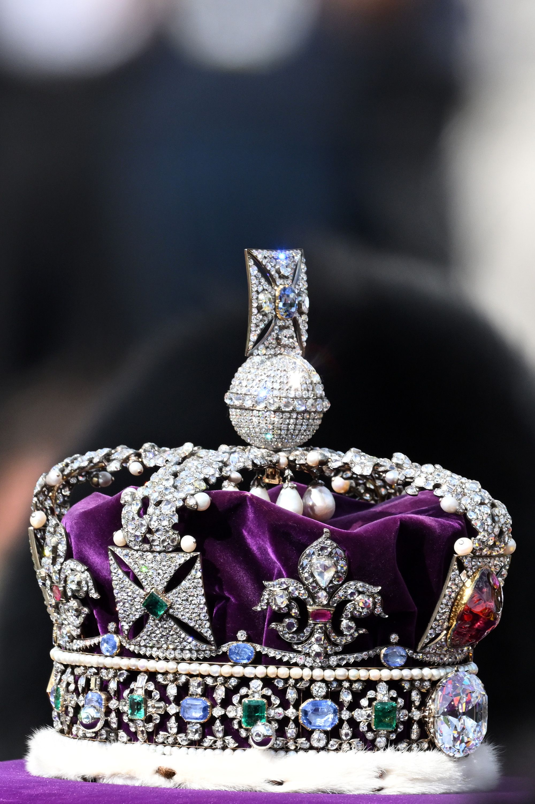

- For you
- Trending
- News
- Sports
- Entertainment

The Coronation of the King
- Trending in News Meghan 56.1k Tuits
- Trending Starlink 26.4k Tuits
- Trending in Business personalities Warren Buffett 5,502 Tuits
- Trending in Political figures Poland 29.9k Tuits
- Celebrities Trending Denzel Washington1,215 Tuits
- Who to Follow
-
 Java @Java
Java @Java
- Relativity Space @relativityspace
- Virgin Galactic @virgingalactic
- NASA @NASA
- Tesla @Tesla